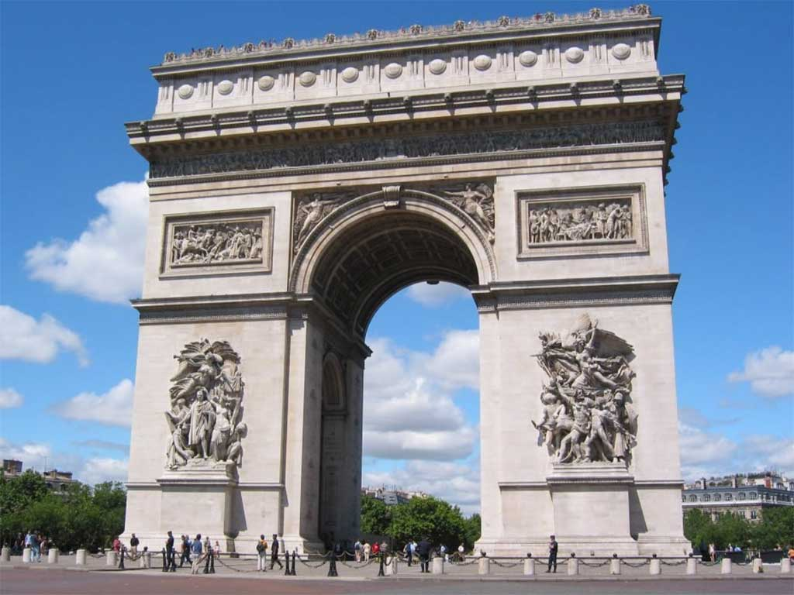
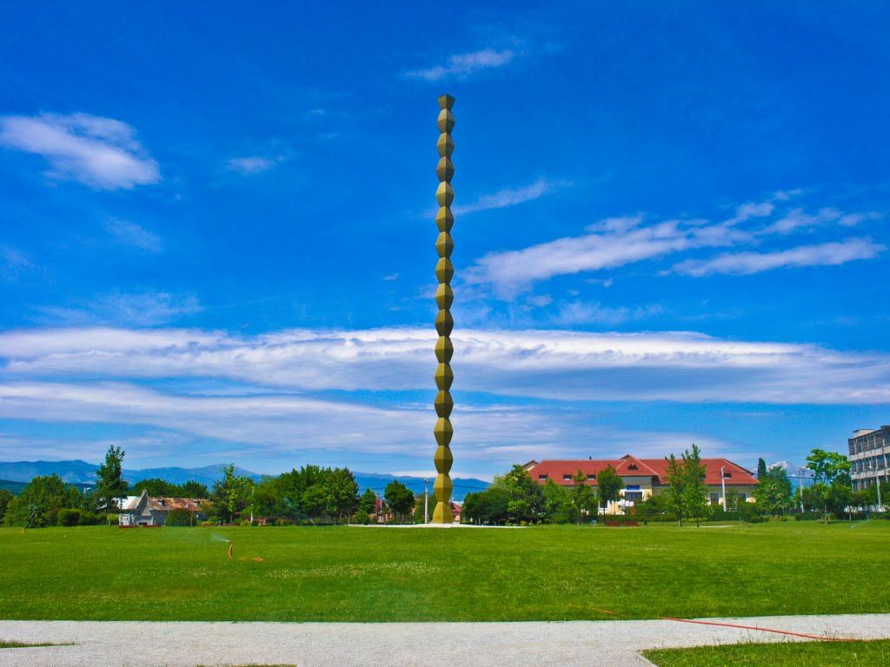
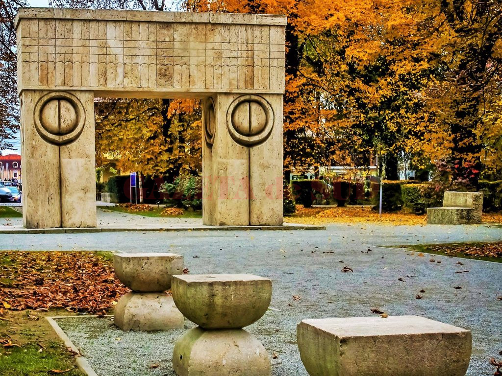
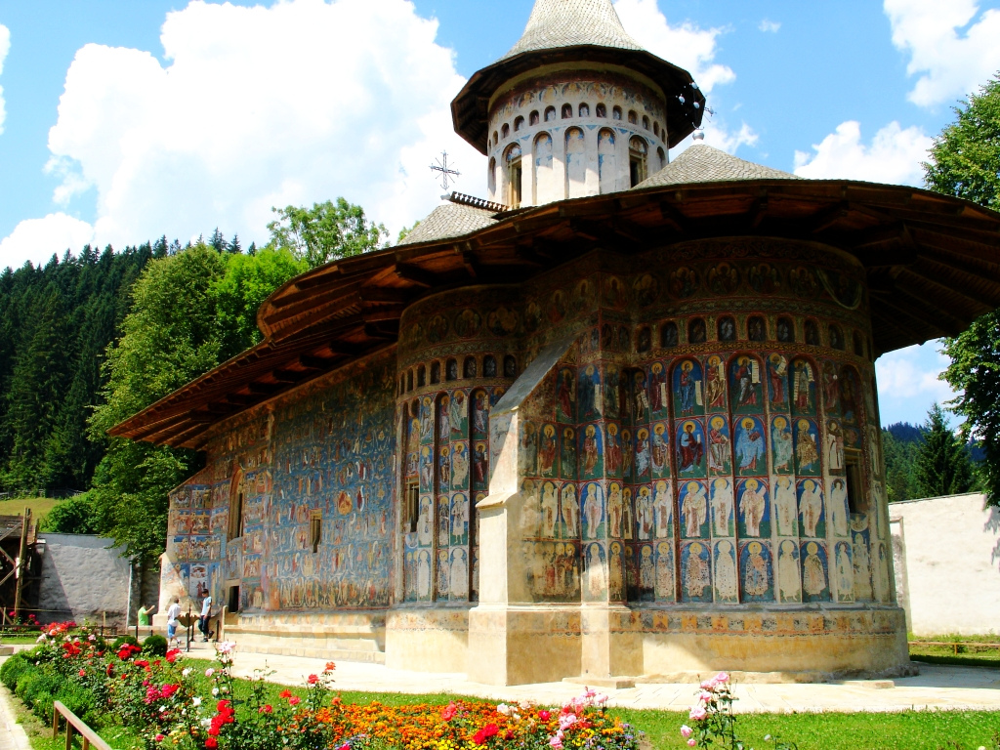

Monumente

ARCUL DE TRIUMF

COLOANA INFINITULUI

SFINXUL

POARTA SARUTULUI

MANASTIREA VORONET
ARCUL DE TRIUMF
COLOANA INFINITULUI
SFINXUL
POARTA SARUTULUI
MANASTIREA VORONET
România este un stat situat în sud-estul Europei Centrale, pe cursul inferior al Dunării, la nord de peninsula Balcanică și la țărmul nord-vestic al Mării Negre. Pe teritoriul ei este situată aproape toată suprafața Deltei Dunării și partea sudică și centrală a Munților Carpați. Se învecinează cu Bulgaria la sud, Serbia la sud-vest, Ungaria la nord-vest, Ucraina la nord și est și Republica Moldova la est, iar țărmul Mării Negre se găsește la sud-est.
De-a lungul istoriei, diferite porțiuni ale teritoriului de astăzi al României au fost în componența sau sub administrația Daciei, Imperiului Roman, Imperiului Otoman, Imperiului Rus și a celui Austro-Ungar.
România a apărut ca stat, condus de Alexandru Ioan Cuza, în 1859, prin unirea dintre Moldova și Țara Românească, păstrând autonomia și statutul de stat tributar față de Imperiul Otoman, pe care-l aveau cele două principate. A fost recunoscută ca țară independentă 19 ani mai târziu. În 1918, Transilvania, Bucovina și Basarabia s-au unit cu România formând România Mare sau România interbelică, care a avut cea mai mare extindere teritorială din istoria României (295.641 km2).
În ajunul celui de-al Doilea Război Mondial (1940), România Mare, sub presiunea Germaniei naziste, a cedat teritorii Ungariei (nord-estul Transilvaniei), Bulgariei (Cadrilaterul) și Uniunii Sovietice (Basarabia, Herța și Bucovina de nord). După abolirea dictaturii lui Antonescu la 23 august 1944 România s-a retras din alianța cu Puterile Axei, trecând de partea Puterilor Aliate (Anglia, Statele Unite, Franța și Uniunea Sovietică). Prin Tratatul de pace de la Paris semnat la 10 februarie 1947, din teritoriile cedate ale fostei Românii Mari a recuperat Transilvania de Nord.
După înlăturarea regimului comunist instalat în România (1989) și după destrămarea Uniunii Sovietice (1991), statul a inițiat o serie de reforme economice și politice. După un deceniu de probleme economice, România a introdus noi reforme economice de ordin general (precum cota unică de impozitare, în 2005) și a aderat la Uniunea Europeană la 1 ianuarie 2007.
România este o republică semi-prezidențială. Este al nouălea stat după suprafața teritoriului (238 397 km²) și a șaptea după numărul populației (peste 20 milioane locuitori)[8] dintre statele membre ale Uniunii Europene. Capitala țării, București, este și cel mai mare oraș al ei și al șaselea oraș din UE după populație (1,9 milioane locuitori). În 2007, a fost rândul României să desemneze un oraș drept Capitală Europeană a Culturii, fiind ales Sibiul.[9] România este membră a unor organizații internaționale, printre care: ONU din 1955, CoE din 1993, Uniunea Europeană de la 1 ianuarie 2007, NATO din 29 martie 2004, OSCE, OIF din 2003, Uniunea Latină din 1980, și unor instituții economice: Grupul Băncii Mondiale, FMI din 1972, BERD din 1991; și este candidată la aderarea la OCDE.
Numele de „România” provine de la „român”, cuvânt derivat din latinescul romanus care semnifică cetățean al Romei.
Cel mai vechi indiciu referitor la existența numelui de „român” ar putea fi conținut de Cântecul Nibelungilor din secolul al XIII-lea: „Ducele Ramunch din țara Valahilor/cu șapte sute de luptători aleargă în întâmpinarea ei/ca păsările sălbatice, îi vedeai galopând”. Ramunch ar putea fi o transliterație a numelui „Român” reprezentând în acest context un conducător simbolic al românilor.
Cele mai vechi atestări documentare ale termenului de „rumân/român” cunoscute în mod cert sunt conținute în relatări, jurnale și rapoarte de călătorie redactate de umaniști renascentiști din secolul al XVI-lea care, fiind în majoritate trimiși ai Sfântului Scaun, au călătorit în Țara Românească, Moldova și Transilvania. Astfel, Tranquillo Andronico notează în 1534, că valahii „se numesc romani”.[13] Francesco della Valle scrie în 1532 că valahii „se denumesc romani în limba lor”. Mai departe, el citează chiar și o scurtă expresie românească: „Sti rominest?”. După o călătorie prin Țara Românească, Moldova și Transilvania, Ferrante Capecci relatează prin 1575 că locuitorii acestor provincii se numesc pe ei înșiși „români” (romanesci). Pierre Lescalopier scrie în 1574 că cei care locuiesc în Moldova, Țara Românească și cea mai mare parte a Transilvaniei, „se consideră adevărați urmași ai romanilor și-și numesc limba «românește», adică romana”.
Mărturii suplimentare despre endonimul de „rumân/român” furnizează și autori care au venit în mod prelungit în contact direct cu românii. Astfel, umanistul sas Johann Lebel relatează în 1542 că „românii […] se numesc pe ei înșiși «Romuini»”. Istoricul polonez Orichovius (Stanisław Orzechowski) scrie în 1554 că românii „se numesc pe limba lor romini după romani, iar pe limba noastră (poloneză) sunt numiți valahi, după italieni”,[18] în timp ce primatul și diplomatul ungar Anton Verancsics scrie în 1570 că „românii se numesc romani”, iar eruditul maghiar transilvan Martinus Szent-Ivany citează în 1699 expresii românești ca: „Sie noi sentem Rumeni” și „Noi sentem di sange Rumena”.
Cel mai vechi indiciu cunoscut asupra unei denumiri geografice cu mențiunea „rumânesc” este conținută de unele versiuni ale operei Getica de Iordanes: „... Sclavini a civitate nova et Sclavino Rumunense et lacu qui appellantur Mursianus...”. Denumirea Rumunense constituie o transliterație latinizantă a unei pronunții slave pentru „rumânesc”. Deși mențiunea Sclavino Rumunense s-a dovedit a fi apocrifă, ea fiind o interpolare ulterioară în textul lui Iordanes, relevanța ei istorică rămâne considerabilă, interpolarea neputând fi mai târzie de secolele al X-lea–al XI-lea.
Cea mai veche atestare documentară cunoscută a numelui de țară este Scrisoarea lui Neacșu din 1521, ce conține mențiunea cěra rumŭněskŭ (Țeara Rumânească).
Miron Costin insistă asupra denumirii de „român, adică roman” ce o poartă românii din Principatele Române. La fel, Constantin Cantacuzino explică pe larg în Istoria Țării Rumânești originile și semnificația denumirii de „român, românesc” dată Țărilor Române. Dimitrie Cantemir denumește în mod sistematic toate cele trei Principate locuite de români ca „Țări Românești”. Termenul de „România” în accepțiunea sa modernă este atestat documentar în al doilea deceniu al secolului al XIX-lea.
Până în secolul al XIX-lea au coexistat pentru spațiul dintre Nistru și Tisa denumirile de „Rumânia” și „România”, precum și două endonime, Român și Ruman fiind folosite alternativ [a], forma scrisă cu „u” fiind predominantă până când evoluția sociolingvistică din secolul al XVII-lea a condus la diferențierea semantică a celor două forme: rumân care semnifica șerb/ supus la clacă, în timp ce termenul de român a păstrat sensul etnolingvistic inițial. După desființarea iobăgiei în 1746, cuvântul rumân a căzut treptat din uz și ortografia s-a stabilizat la forma de român. Tudor Vladimirescu , lider revoluționar de la începutul secolului al XIX-lea, a folosit termenul Rumania să se refere exclusiv la principatul Țării Românești, Valahia. "
Din termenul „rumân” s-a format la finele secolului XVIII exonimul modern a poporului român și a statului român în cazul principalelor limbi europene: „Rumänen/Rumänien” (germană), „Roumains/Roumanie” (franceză), „Rumanians/Rumania” (denumirea învechită din engleză), „Rumuni/Rumunija” (în sârbă; totuși, în cazul românilor timoceni s-a păstrat exonimul de „vlahi”, vechiul exonim al tuturor românilor[28], până în ziua de azi, chiar dacă se autodefinesc în limba maternă drept „rumâni”) etc. În ultimele decenii, în mai multe limbi s-a trecut la înlocuirea formei care derivă din „rumân” în cea care derivă din „român”. Astfel, în limba engleză forma „Rumania” a fost în locuită cu „Romania”. În limba italiană denumirea „Rumania” a fost înlocuită cu „Romania”, iar în limba portugheză se folosesc formele „Romenia” (pentru a desemna statul român) și „Romeno” pentru a desemna poporul român.